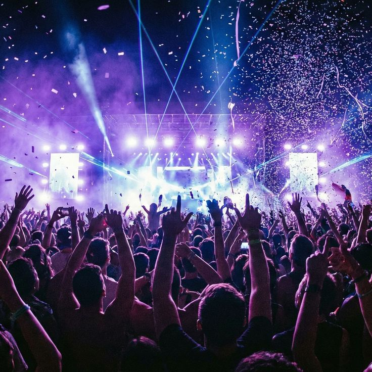

Como Chegar
Estrada das Flores, KM 10.

O Festival Som do Vento une música alternativa, artes visuais e sustentabilidade em meio à natureza. A abertura oficial fica por conta de Ana Frango Elétrico, preparando o público para as apresentações de Rubel, Kamaitachi e o rock psicodélico da banda O Terno. As grandes atrações que fecham a noite sob o céu estrelado são as lendas internacionais Radiohead e The Cure. Além dos shows intimistas, o evento conta com instalações de arte, ioga pela manhã, oficinas criativas e feiras de artesanato local.
Comprar Ingresso Lote 1
Abertura

Segundo show

Terceiro show

Quarto show

Quinto show

Sexto show
Estrada das Flores, KM 10.
Capa de chuva e protetor solar.
Dúvidas frequentes sobre o evento.